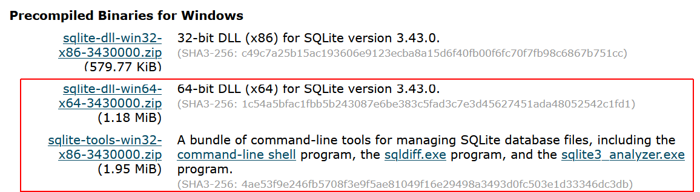
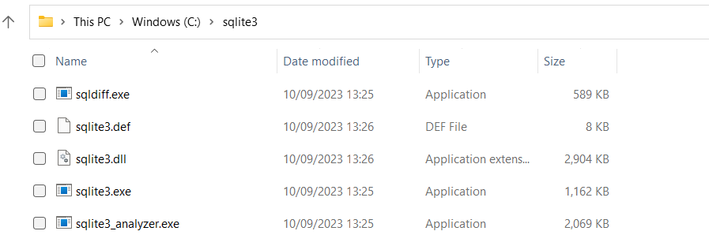
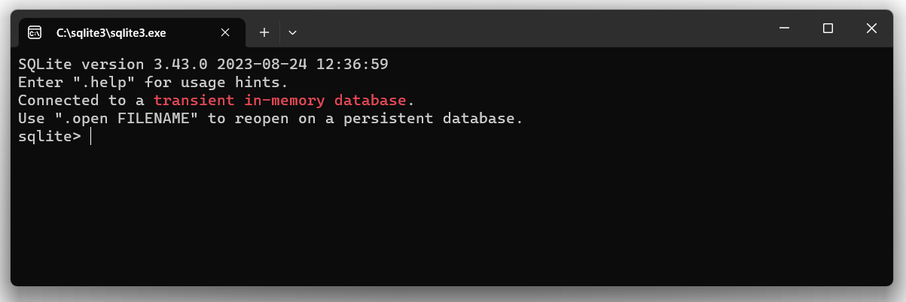
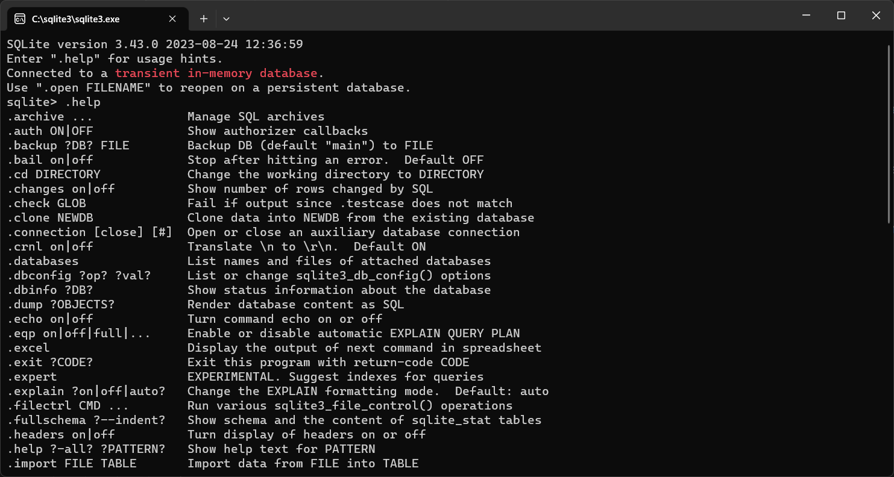
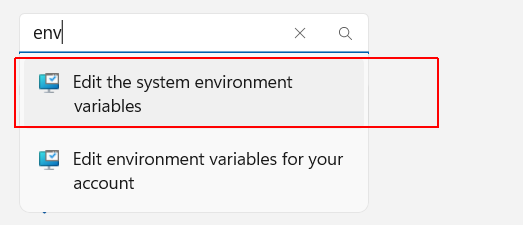
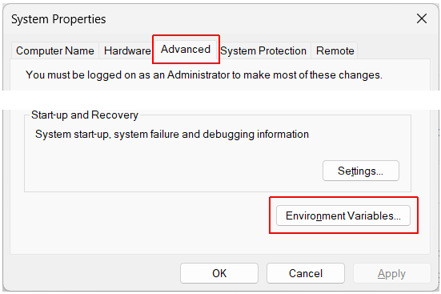
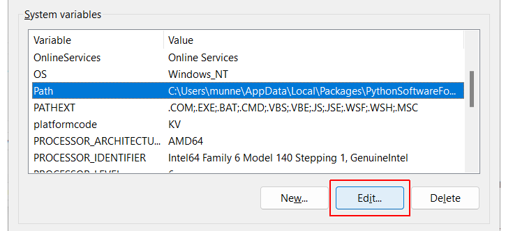
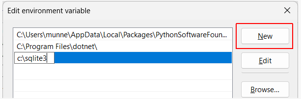

Learning Goals
At the end of this Tutorial, you will be able to:
- Download and install the open-source and serverless SQLite 3 database engine for working with relational databases.
About SQLite
SQLite is a self-contained, serverless database engine, which is different from most other SQL databases. There are no separate server and client components, and everything is embedded into the application itself.
SQLite is a small and self-contained database engine. Unlike SQL Server, Oracle, and other large databases, SQLite does not run any server and backend processes and services. All data and the data objects are stored in a single file that can be accessed directly by any application by using its full path. The file is stored on the file system as any other file.
SQLite is a serverless and zero-configuration database. That means, you don’t need or run a server of the database engine and it does not require any configuration except to set up a path in the configurations.
Installing SQLite on Windows 11
Follow the steps below:
- Create a new folder named C:\sqlite3. This is where your SQLite files will be stored.

DO NOT type the letter 'l' twice in sqlite.
DO type 'sqlite3' not 'sqllite3'.
- Go to the SQLite Download Page and download the following files. 
- Copy these two compressed files to your C:\sqlite3 folder and unzip them. Ensure you unzip these files in the root of the folder. If they unzipped into a subfolder, move them to the root folder.
- You can delete the zip files when finished. You should now have the following five files in your C:\sqlite3 folder.  As you can see, there are three exe files - sqldiff.exe, sqlite3.exe, and sqlite3_analyzer.exe.
- Double click on sqlite3.exe to open a command prompt. 
- At the command prompt, type .help and press ENTER to display a list of help instructions.  Your final step is to add this path to the PATH environment variable on your machine so you can run SQLite from inside any folder in a terminal window.
- On the Windows taskbar, right-click the Windows icon and select System from the menu displayed.
- At the top-left of the screen you can see the Find a setting search box. Type env, select Edit the system environment variables, and press ENTER. 
- In the System Properties dialog box now displayed, select the Advanced tab at the top and then click the Environment Variables button near the bottom-right. 
- In the Environment Variables dialog box now displayed, in the lower System variables section, click once on the Path option to select it, and then click the Edit button. 
- In the Edit environment variable dialog box now displayed, click the New button to open up a new, blank line.  Type the path to the folder containing your SQLite files, click OK and then OK again. You can now close your Settings dialog box.
You have now installed SQLite on your Windows 11 PC, and you can run it from a terminal window inside any folder. See the example below.
Installing SQLite on Apple Mac
On macOS, you don’t need to do anything to install sqlite. It’s preinstalled in all modern versions of macOS.
All you need to do is to open a terminal and run the sqlite command.
Press ctrl-C 2 times to exit the SQLite executable.